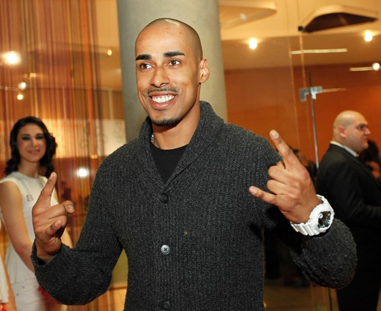

Биография
Кой е Бобо?
| Борислав Димитров – Бобо е роден на 22 декември 1983 г. Има един брат и една сестра. В ранна възраст започва да се занимава с пеене при джаз певицата и музикален педагог Стефка Оникян. През 2001 г. става част от първия български хип-хоп лейбъл „Снайпер Рекърдс“, където стартира кариерата му на изпълнител, композитор и текстописец. Той е добро момче, преминало през много тежки моменти в живота си. |  |
8 интересни факта за него
|
1. Биологичният баща на Бобо е родом от Гвинея, но той го зарязва още когато е на 3. 2. Въпреки произхода си обаче, шоколадовият красавец е израсъл в столичния квартал "Надежда". 3. Една от големите мечти на Бобо е да отиде до Африка, за да намери баща си . 4. Преди няколко години рапърът е наръган от непознати на улицата заради шоколадовия си тен. 5. Арестуван е за притежание на марихуана. 6. Когато е 12- годишен, майката на Бобо забелязва певческия му талант и го записва на частни уроци по пеене при доц. Стефка Оникян. 7. През 2001 г., когато е 18-годишен, отива на кастинг в несъществуващия вече хип-хоп лейбъл "Снайпер рекърдс", харесват го и така стартира кариерата му. 8. През 2012-та година Бобо става и официален член на продуцентския екип Symphonics. |